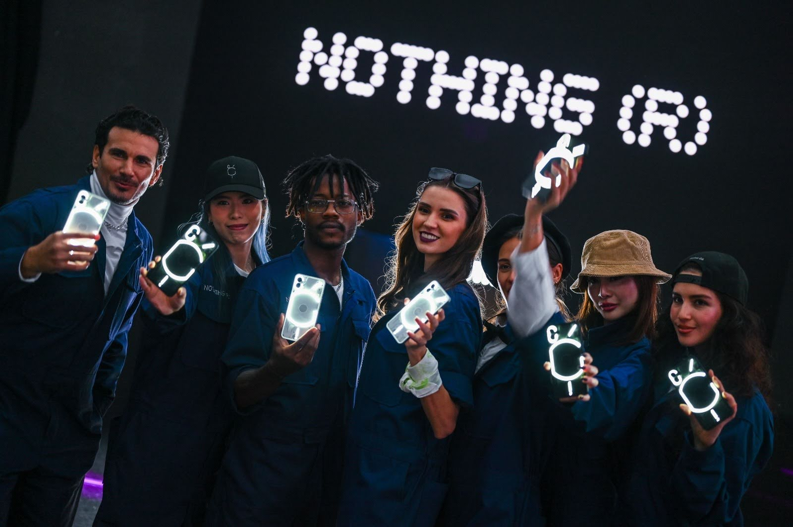

About
Strategy without rigour is just opinion. I bring both — cultural instinct, sharpened by data.

I spent six years learning why organisations work before I started making culture work for brands.
The first act was analysis — at DBS Bank, Maximo and Uniting Church Queensland, building operational dashboards and enterprise reporting that turned data into decisions, leading process automation and large-scale systems implementation, and aligning cross-functional stakeholders who didn’t always want to be aligned. Six-plus years of turning complex organisations into clearer systems.
The second act was already running in parallel. Nights and weekends inside music, nightlife and community scenes across Singapore, Australia, New Zealand and Sri Lanka — booking artists, producing events, making content, releasing music. Not studying the culture. Being in it.
Creative strategy is where the two acts became one job. I find what makes an audience care, then build the story, content and experience around it — and because of the first act, the ideas are built to survive contact with reality: budgets, stakeholders, logistics, data.
“Great ideas aren’t built by individuals — they’re built by teams aligned around a compelling vision.”
That’s the philosophy: strategies that bring together culture, creativity and community, executed with precision, professionalism and purpose.
In numbers
Core Expertise
- Creative Strategy
- Cultural Insight
- Brand Storytelling
- Campaign Development
- Content Strategy
- Experiential & Live
- Brand Partnerships
- Artist & Talent Relations
- Data-Driven Insight
Toolkit
- Insight — SQL · Python · Power BI · Excel VBA
- Content — Premiere Pro · DaVinci Resolve · Lightroom · Photoshop
- Studio — Logic Pro X · Ableton Live · Serato · Rekordbox
- Workflow — Notion · Trello · Slack · Google Workspace
Education
- Massey University — Postgraduate Diploma, Business Administration & Operations (2024)
- Ngee Ann Polytechnic — Diploma, Biomedical Engineering (2015)
Languages
- English — Native
- Malay — Advanced
- Mandarin — Conversational